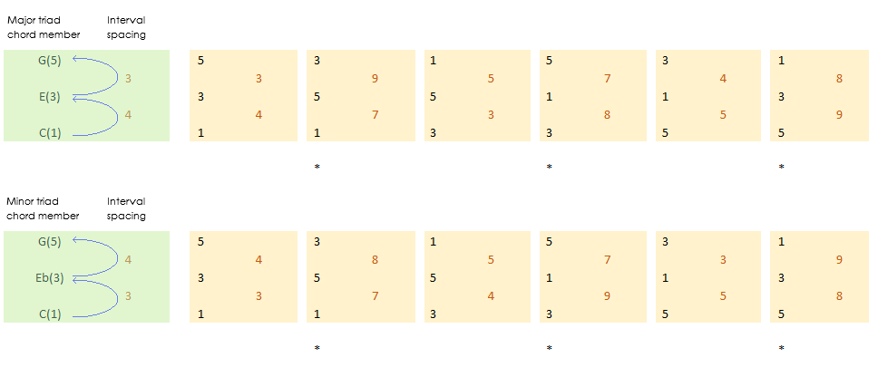
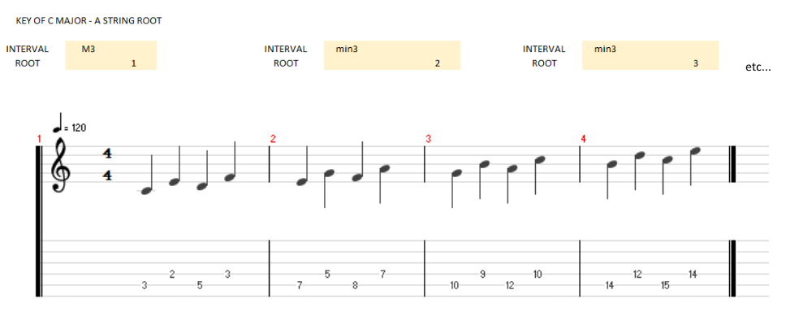

GROWL
I'd rather be playing guitar
Well maybe not ever but there is no denying how useful this exercise is. Recently I have been working on inversions. One of the trickiest elements of which is quickly placing the notes of the chord above the new (usually 3rd or 5th) root. As with many guitar competencies this eventually becomes semi-automatic. But to begin with it helps to have a way to break it down.
About those inversions...
There are about 6 ways of realistically playing triads and their inversions over three strings that don't include relying on open string tricks (playing open strings for E,A,D,G etc). Asterisks mark those that are large stretches before the 12th fret.
As you can see this presents a large variety of intervals to tackle for just triads! It behoves us to get practicing all of these. Furthermore, the diagram above can't be used as a guide for finger placements, this will change when the chord root is anywhere but the 5 or 6 string. The way you play a 5th interval for instance is one fret wider once we start using the B string. See "Fingerboard mathematics" for more.
The exercise
I don't believe in memorizing shapes. I never have. I prefer to hear intervals and look for them. That is all a chord or scale is, stacked intervals. I think it makes you think far more musically with this approach; hearing the internal harmonies of chords really helps you derive their function.
I put this exercise together to push my quick use of intervals. I'm finding it useful for pretty much everything though. It leads into scales, voice leading, arpeggio playing. Many, many things and all just by placing two fingers.
- BEFORE YOU START: Choose either major or minor as key type
- 1. Start your metronome.
- 2. Take dice, pack of cards or other random number generator. Generate two numbers.
- 3. Assign the first number that appears as your string root (eg: 1-2 on the die is E, 3-4 is A, 5-6 is D).
- 4. Use the second number to select the key (1 is C, 2 is C#, 3 is D etc).
- 5. Play in quarter notes the root followed by the second interval for chord 1 of the key.
- 6. Move your root up to the chord 2 root and play the root and second there.
- 7. Continue through all chords in your chosen key and then descend.
- 8. Repeat steps 5 onwards but now play 3rds, then play 4ths etc. Once you are playing 6ths/7ths move your interval up a string.
By way of example this is what you would play for 3rds in the key of C major with an A string root.
By playing all of the chords in a key as intervals you play all qualities of the intervals! This is because the notes you played were not only the parent key but also the notes of it's modes. Which contain all variations of the scale members. Confused? Try "Understanding modality."
Having trouble: Try playing a major arpeggio, minor arpeggio and diminished arpeggio before starting the exercise to tune your fingers and ears to the 1,3 and 5 intervals. Keep in mind that the 5th is for the most part invariable in the chords of a key, use it as a guide.
Extension: If you are in Conan the Barbarian mode try generating three numbers, the first is your tonality (major, natural minor, harmonic minor, melodic minor, whole tone). You could also try this as a two player non-stop game! Your partner just needs to call out the random numbers.